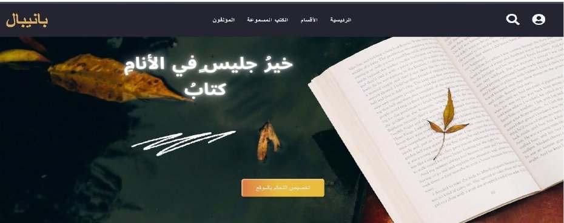

بانيبال: مكتبة إلكترونية لذوي الهمم باستخدام الذكاء الصنعي والإبصار الحاسوبيBanipal: An Accessible E-Library Using AI and Computer Vision

المشكلة والهدف
القراءة حق للجميع، لكن المكتبات الإلكترونية التقليدية لا تراعي في الغالب احتياجات ذوي الهمم. هدفنا بناء مكتبة تضم نحو ألف كتاب في أقسام متنوعة (الروايات وقواعد اللغة العربية والبرمجة وغيرها)، مع صفحات للمؤلفين الأكثر قراءة تنظّم أعمال كل مؤلف في جداول، بحيث يستطيع المستخدم التفاعل معها دون الحاجة إلى اليدين.
دوري في المشروع
المشروع عمل جماعي لثلاث طالبات. كان دوري في قسم الذكاء الاصطناعي: ميزة تلخيص الكتب باستخدام نموذج DistilBART، إضافةً إلى جزء من وحدة الإبصار الحاسوبي المسؤولة عن التحكم بحركات الرأس والعين. أما بقية المكونات، ومنها الواجهات وقاعدة البيانات والمساعد الصوتي، فهي ثمرة عمل الفريق.
الميزات الرئيسية
- التحكم بالموقع بحركات الرأس والعين بتقنيات الإبصار الحاسوبي.
- مساعد صوتي يحوّل الكلام إلى نص وينفذ الأوامر للوصول إلى الكتب وسماعها.
- تلخيص الكتب بنموذج BART لمساعدة القارئ على اختيار ما يناسبه.
- خوارزمية الكتب الأكثر بحثًا تحسب تكرار البحث وتعرض الأكثر طلبًا.
البنية التقنية
- الواجهة الأمامية: HTML وCSS وJavaScript وإطار Bootstrap.
- الواجهة الخلفية: PHP وقاعدة بيانات MySQL.
- وحدة التحكم بالوجه: Python مع OpenCV وDlib وNumPy وPyAutoGUI.
- التلخيص: نموذج DistilBART (sshleifer/distilbart-cnn-12-6) المدرَّب على CNN/DailyMail.
- المنهجية والنمذجة: النمذجة الأولية ومخططات UML (حالات الاستخدام).
كيف يعمل التحكم بالوجه
تُلتقط إطارات الفيديو من الكاميرا، ويُحدَّد موقع الوجه وتُستخرج معالم العينين والفم والأنف بمكتبة Dlib، ثم تُحسب نسبة أبعاد العين ونسبة فتحة الفم. عند تجاوز العتبات المحددة يُنفَّذ الأمر المقابل: نقرة يمنى أو يسرى أو تمرير، بينما تحرّك حركة الرأس المؤشر عبر PyAutoGUI.
الاختبار والنتائج
اختُبرت الميزات مع زائر من ذوي الهمم تنقّل بين صفحات الموقع بحركات الرأس دون استخدام يديه، وقرأ مستعينًا بصوته فقط عبر المجيب الآلي. وقيّمنا الملخصات المولَّدة بمقياس BLEU وسجلت قيمة 0.9.
الآفاق المستقبلية
- توسعة المكتبة من ألف كتاب إلى مليون كتاب، وزيادة الكتب الصوتية.
- توسيع المساعد الصوتي ليتحكم بكل الموقع.
- تطوير التلخيص ليشمل الكتب العربية.
- إضافة نظام اقتراح كتب بحسب اهتمامات المستخدم، ومساحة للقراء لتبادل الآراء.
Problem and goal
Reading should be possible for everyone, but most e-libraries do not consider people with disabilities. The goal was a library of about 1,000 books in several categories (novels, Arabic grammar, programming and more), with pages for the most-read authors listing each author's works in tables, usable without the hands.
My role
This was a team project of three students. My part was the AI side: the book-summarization feature built on the DistilBART model, together with part of the computer-vision module that handles head and eye control. The remaining components, including the interfaces, database and voice assistant, were the work of the team.
Key features
- Head and eye control of the site using computer vision.
- Voice assistant that converts speech to text and runs commands to find and listen to books.
- AI book summaries generated with a BART model to help readers choose.
- Most-searched books algorithm that counts search frequency and shows the most requested books.
Technical stack
- Front end: HTML, CSS, JavaScript and Bootstrap.
- Back end: PHP and a MySQL database.
- Face control module: Python with OpenCV, Dlib, NumPy and PyAutoGUI.
- Summarization: DistilBART (sshleifer/distilbart-cnn-12-6) trained on CNN/DailyMail.
- Method and modeling: prototype-based development and UML use-case diagrams.
How face control works
Video frames are captured from the camera, the face is located and eye, mouth and nose landmarks are extracted with Dlib, then the eye aspect ratio and mouth-opening ratio are computed. When these cross set thresholds, the matching command runs: left click, right click or scroll, while head movement moves the cursor through PyAutoGUI.
Testing and results
The features were tested with a visitor with a disability who navigated the site by head movement without using their hands, and read using only their voice through the voice assistant. Generated summaries were evaluated with BLEU and scored 0.9.
Future work
- Grow the library from 1,000 to 1,000,000 books and add more audiobooks.
- Extend the voice assistant to control the whole site.
- Extend summarization to Arabic books.
- Add personalized book recommendations and a space for readers to exchange opinions.